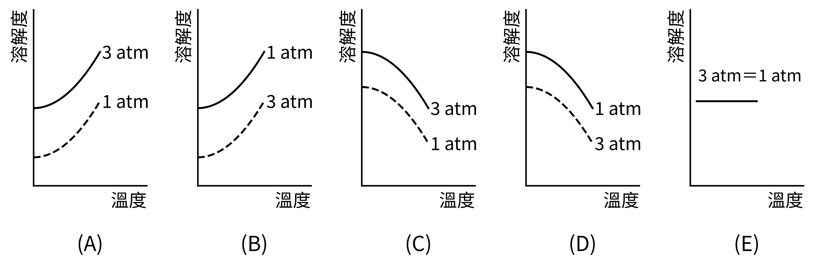
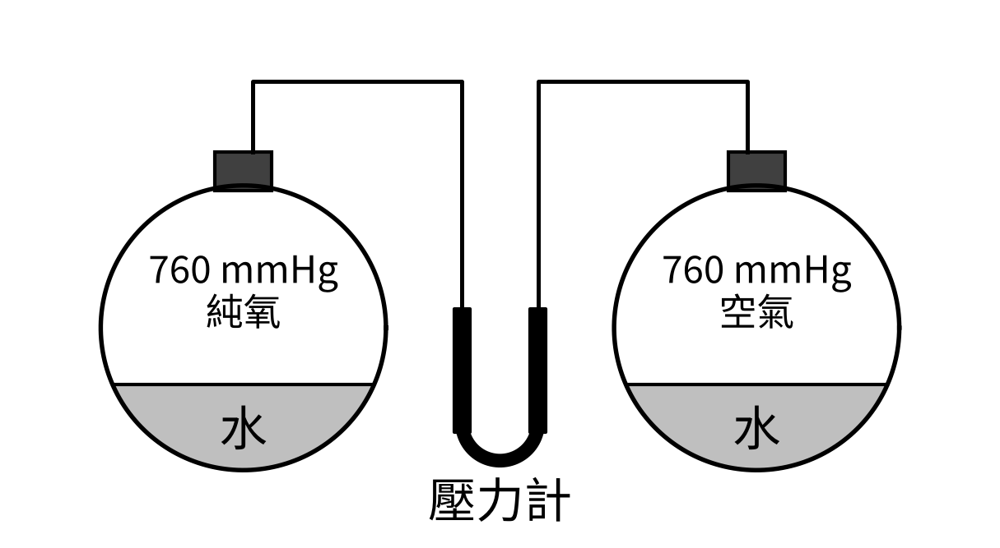
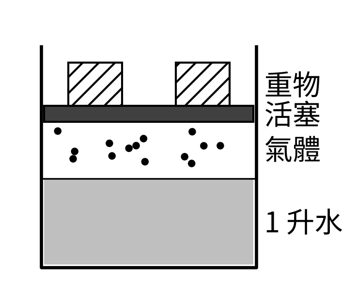

基礎題
常溫常壓下，下列何種氣體難溶於水？
- (A) 氨
- (B) 氯化氫
- (C) 一氧化碳
- (D) 二氧化碳
看答案與詳解
答案：(C)
(C) ✔ CO 極性很小、不與水反應，難溶
(D) ✘ CO2 溶解度比 CO 大得多（部分與水反應成 H2CO3）
下列有關溶解度的敘述，何者正確？
- (A) 亨利定律在氣體溶解度愈大時愈適用
- (B) 混合氣體中，某物種在水中的溶解度隨總壓增加而增加
- (C) 氣體在水中的溶解度隨溫度增加而減少
- (D) 亨利定律適用於氨氣在水中的溶解度
看答案與詳解
答案：(C)
(B) ✘ 某成分的溶解度由它自己的分壓決定，不是由總壓決定（例如定容下加入其他氣體使總壓增加，該成分分壓不變，溶解度也不變）
(C) ✔ 氣體溶解放熱，升溫溶解度變小
(D) ✘ NH3 極易溶且與水反應，不適用
下列關於亨利定律的敘述，何者正確？
- (A) 溫度固定時，混合氣體中每一難溶性氣體的溶解度與其總壓成正比
- (B) 亨利定律對於與溶劑會反應或於溶劑中會游離的氣體不適用
- (C) 亨利定律 m＝kP 中，k 為亨利常數，其值隨溫度升高而增加
- (D) 氣體在定量水中的體積溶解量，隨壓力增加而成正比增加
看答案與詳解
答案：(B)
(B) ✔ 易溶、會反應或解離的氣體（NH3、HCl、SO2）不適用
(C) ✘ 氣體溶解放熱，溫度升高 k 變小
(D) ✘ 在溶解時的壓力下量，溶解體積與壓力無關（P 加倍，溶入莫耳數加倍，但每莫耳體積減半）
在 20℃、1 大氣壓時，氧在水中的溶解度為 1.4×10−3 mol／L，則在 20℃ 和 0.20 大氣壓時，氧在水中的溶解度為多少 mol／L？
- (A) 2.8×10−4
- (B) 2.8×10−3
- (C) 8.2×10−2
- (D) 8.2×10−4
看答案與詳解
答案：(A)
1.4×10−3×0.20／1＝2.8×10−4 mol／L
對定量的液體而言，氣體的壓力為 P 時，溶解度為 a 克或 V 毫升，當壓力為 nP 時，其溶解度（此氣體為難溶性氣體）為：
- (A) na 克或 nV 毫升
- (B) na 克或 Vn 毫升
- (C) na 克或 V 毫升
- (D) a 克或 V 毫升
看答案與詳解
答案：(C)
體積在溶解時的壓力 nP 下量：V＝(n×n0)RT／(nP)，n 抵銷 → 仍為 V 毫升 → (C)
「打開汽水瓶蓋，先有少許氣體逸出，接著又有大量氣泡從汽水中冒出，因此汽水溫度略為下降」。上述現象詮釋下列事實中的哪一項？
- (A) 水變為水蒸氣時，吸收熱量
- (B) 該氣體的溶解度與壓力有關；壓力愈大，溶得愈多
- (C) 水在低壓之下，沸點下降
- (D) 該氣體是二氧化碳
- (E) 少許氣體為水蒸氣，而大量氣泡是二氧化碳，逸出時會使汽水成為過冷的液體
看答案與詳解
答案：(B)
氣體逸出是吸熱過程，所以汽水略微變涼
現象說明的是「溶解度與壓力有關」→ (B)
(D) 雖是事實，但不是此現象要詮釋的規律
下列哪些因素同時影響氣體溶質與固體溶質的溶解度？（多選）
- (A) 溶質種類
- (B) 溫度
- (C) 壓力
- (D) 催化劑
- (E) 攪拌
看答案與詳解
答案：(A)(B)
(B) ✔ 溫度：氣體多數升溫變小，固體多數升溫變大，但都受影響
(C) ✘ 壓力只對氣體影響大，對固體幾乎無影響
(D)(E) ✘ 催化劑、攪拌只影響速率，不影響溶解度
下列何種氣體可用亨利定律討論壓力對其溶解度的影響？（多選）
- (A) 氮
- (B) 氫
- (C) 氯
- (D) 氧
- (E) 氨
看答案與詳解
答案：(A)(B)(D)
(A)(B)(D) ✔ N2、H2、O2 難溶，不與水反應
(C) ✘ Cl2 會與水反應（Cl2＋H2O ⇌ HCl＋HClO）
(E) ✘ NH3 極易溶，且與水反應
下列有關溶解度的敘述，何者正確？（應選 3 項）（多選）
- (A) 溶解速率愈快的鹽，該鹽的溶解度愈高
- (B) 大顆粒的食鹽在水中溶解度比研磨成細小粉末的食鹽來得大
- (C) 氣體在水中的溶解度，隨溫度之升高而減少
- (D) 將固體溶質加入水中，直到容器底部有沉澱時，此時溶液的濃度＝飽和濃度＝溶解度
- (E) CO2(g) 壓力增加，可增加 CO2(g) 在水中的溶解度
看答案與詳解
答案：(C)(D)(E)
(B) ✘ 顆粒大小只影響溶解速率，溶解度不變
(C) ✔ 氣體溶解多為放熱，升溫溶解度變小
(D) ✔ 底部有未溶固體表示已飽和，濃度即該溫度的溶解度
(E) ✔ 亨利定律：分壓愈大，溶解度愈大
進階題
CO2 對水溶解度的圖，下列何者正確？

看答案與詳解
答案：(C)
壓力愈大，溶得愈多 → 3 atm 的曲線在 1 atm 上方，(D) ✘
故選 (C)
27℃，1 atm 的純氧對水的溶解度為 30 mL／L，相當於多少 ppm？
- (A) 39
- (B) 55
- (C) 96
- (D) 122
看答案與詳解
答案：(A)
每升水溶 39 mg，稀薄水溶液 1 ppm≒1 mg／L → 約 39 ppm
在 20℃ 時有一裝置如下圖所示，經長時間後，在左端的溶氧量為 1.38×10−3 莫耳／升，試求此時在右端的溶氧量為若干莫耳／升：（氧氣在空氣中所含的體積，約為 21％）

- (A) 1.38×10−3
- (B) 3.18×10−4
- (C) 2.90×10−4
- (D) 2.54×10−3
看答案與詳解
答案：(C)
左：PO2＝1 atm；右：PO2＝0.21 atm
右端溶氧量＝1.38×10−3×0.21≒2.90×10−4 mol／L
某溫度時，1 atm 的氧氣及 1 atm 的氮氣，對水溶解度分別為 50 mL／1 L 水及 20 mL／1 L 水。溫度不變、1 atm 的空氣與水經長時間接觸而達溶解平衡後，溶於 1 L 水中的氧氣與氮氣的莫耳數比為何？（假設氧氣及氮氣在空氣中的含量百分率分別為 20％、80％）
- (A) 5：2
- (B) 5：8
- (C) 1：1
- (D) 1：4
- (E) 10：1
看答案與詳解
答案：(B)
PO2＝0.2 atm → 相當於 1 atm 下 50×0.2＝10 mL
PN2＝0.8 atm → 相當於 1 atm 下 20×0.8＝16 mL
同溫同壓下體積比＝莫耳數比 → 10：16＝5：8
已知水 1 升可溶解 0℃、1 atm 氧 44.8 cm3，水 1 升可溶解 0℃、1 atm 氮 22.4 cm3，則 0℃ 水 1 升與 0℃、1 atm 空氣長時間接觸後溶入水中的氧與氮之下列各量的比值（氧：氮）何項正確？（設空氣中氧與氮的體積比為 1：4）（多選）
- (A) mol 數比＝2：1
- (B) 體積比（在其分壓）＝2：1
- (C) 重量比＝4：7
- (D) mol 數比＝1：2
- (E) 重量比＝2：1
看答案與詳解
答案：(B)(C)(D)
空氣中 PO2＝0.2 atm、PN2＝0.8 atm
nO2＝2.0×10−3×0.2＝4×10−4；nN2＝1.0×10−3×0.8＝8×10−4
(A) ✘ (D) ✔ 莫耳數比＝1：2
(B) ✔ 在各自分壓下量，溶解體積與壓力無關 → 仍為 44.8：22.4＝2：1
(C) ✔ (E) ✘ 重量比＝(1×32)：(2×28)＝4：7
0℃，1 atm O2 下，1 升水對 O2 之溶解度為 49 cm3，則下列敘述哪些正確？（已知空氣中 O2 與 N2 之體積比為 1：4）（多選）
- (A) 0℃，1 atm O2 下，1 升水所溶 O2 氣體質量為 0.03 克
- (B) 0℃，5 atm O2 下，1 升水所溶 O2 氣體質量為 0.35 克
- (C) 承 (B) 在這壓力下，其體積溶解度為 245 cm3
- (D) 0℃，1 升水與 1 atm 空氣接觸，所溶 O2 之質量為 0.014 克
- (E) 承 (D) 若空氣的壓力為 2 atm，則 2 升水所溶 O2 之質量 0.028 克
看答案與詳解
答案：(B)(D)
(A) ✘ 0.070 g
(B) ✔ 5 atm → 5×0.070＝0.35 g
(C) ✘ 在 5 atm 下量體積仍為 49 cm3（換算成 1 atm 才是 245 cm3）
(D) ✔ PO2＝0.2 atm → 0.2×0.070＝0.014 g
(E) ✘ PO2＝0.4 atm、水 2 L → 0.070×0.4×2＝0.056 g
關於溶解度的敘述，何者正確？（多選）
- (A) 溶解度只受溶質與溶劑之本性影響
- (B) 飽和溶液之溶解度與壓力成正比
- (C) NH3 在水中之溶解度不適用於亨利定律
- (D) 攪拌可加大固體之溶解度
- (E) CaSO4 在水中溫度上升時溶解度變小
看答案與詳解
答案：(C)(E)
(B) ✘ 只有難溶性氣體的溶解度與其分壓成正比，一般飽和溶液不是
(C) ✔ NH3 極易溶且與水反應
(D) ✘ 攪拌只加快溶解速率
(E) ✔ CaSO4 是少數溶解度隨溫度升高而變小的固體
氣體的溶解度受壓力的影響，可以亨利定律說明，已知 CO2 的亨利常數 k＝0.031 M／atm，今有一瓶裝飲料在 25℃ 時，飲料上方有 4 atm 的 CO2，下列敘述何者正確？（已知大氣中 CO2 含量為萬分之三）（多選）
- (A) 25℃，此瓶裝飲料的 CO2 溶解度為 0.124 M
- (B) 25℃，開瓶後，與大氣壓達平衡時，溶在水中的 CO2 溶解度約為 9.3×10−6 M
- (C) 25℃、1 atm 的 CO2 在鹼性溶液中溶解度大於 0.031 M
- (D) 若 CO2 壓力不變，溫度升高，則 CO2 在水中溶解度減小，k 值變小
- (E) 若溫度不變，CO2 壓力加大，則 CO2 在水中溶解度增大，k 值變大
看答案與詳解
答案：(A)(B)(C)(D)
(B) ✔ PCO2＝1×3×10−4 atm → 0.031×3×10−4＝9.3×10−6 M
(C) ✔ 鹼性溶液中 CO2＋2OH− → CO32−＋H2O，被大量吸收，溶得比 kHP 多
(D) ✔ 溶解放熱，升溫 k 變小
(E) ✘ 定溫加壓溶解度變大，但 k 只由氣體、溶劑、溫度決定，不變
假設潛水夫在深海中作業時所呼吸的氣體為純氧，而且作業環境的溫度與壓力為 37℃ 與 10 atm。試問當潛水夫迅速從深海回到水面（1 atm）時，每 100 mL 血液中將逸出多少 mL 氧氣氣泡？（已知氧氣之亨利常數為 1.3×10−3 M／atm；氣泡體積以 37℃、1 atm 計）
- (A) 11.7
- (B) 20.4
- (C) 29.7
- (D) 42.7
- (E) 57.4
看答案與詳解
答案：(C)
100 mL 血液釋出 n＝1.17×10−2×0.100＝1.17×10−3 mol
V＝nRT／P＝1.17×10−3×0.082×310÷1≒2.97×10−2 L≒29.7 mL
大考／素養題
▲ 第 2-19～2-21 題為題組：氣泡水機：將飲用水裝入專用瓶（內裝 800 mL 的水），鎖緊在機器的打氣口後按壓打氣鍵，機器後方鋼瓶中的高壓二氧化碳就會打入水中形成碳酸水（氣泡水）；鋼瓶中二氧化碳不足時，更換鋼瓶即可。二氧化碳於水中的溶解量與其在上方空氣中的分壓有關，已知常溫下，二氧化碳的亨利定律常數為 0.034 M／atm。
若在一氣泡水專用瓶（內裝有 800 mL 的水）中打入了 3 atm 的二氧化碳，達平衡後取出並放置於室溫下，此氣泡水中含有多少 g 的二氧化碳？
- (A) 0.36
- (B) 3.6
- (C) 0.4
- (D) 0.08
- (E) 0.9
看答案與詳解
答案：(B)
n＝0.102×0.800＝0.0816 mol → ×44≒3.6 g
大氣中，二氧化碳的濃度約為 0.04％，設今天有一罐剛打好的氣泡水，其中二氧化碳壓力為 3 atm，小廷喝完之後忘了蓋蓋子，汽水就這樣暴露在常溫下、一大氣壓的空氣中放了三天三夜，小廷發現時裡面已經幾乎沒有氣泡了。請問這個瓶子中所剩下的二氧化碳為原本的幾分之幾？
- (A) 1／2500
- (B) 1／7500
- (C) 1／750
- (D) 1／250
- (E) 1／50
看答案與詳解
答案：(B)
最後 PCO2＝1×0.04％＝4×10−4 atm
剩下比例＝4×10−4÷3＝1／7500
若二氧化碳在水溶液中與氣相中是一個可逆反應：CO2(aq) ⇌ CO2(g)。小廷某天將打好氣的氣泡水蓋子緊閉，可發現氣泡水中幾乎沒有氣泡產生，但若將瓶蓋打開，會聽到「噗哧～～」的一聲，隨即看到氣泡大量產生，並持續許久。關於上述的現象，應如何解釋較適當？
- (A) 打開瓶蓋後，二氧化碳氣體不再溶於水中，於是不斷逸散
- (B) 打開瓶蓋後，水溶液中的二氧化碳含量大增，因此導致反應向右移動，使得逸散氣體量大增
- (C) 打開瓶蓋後，水中溫度遽增，使得二氧化碳溶解度大幅降低，故大量析出
- (D) 打開瓶蓋後，氣泡水上方的二氧化碳飄散至空氣中，因此二氧化碳濃度降低，使得反應向右移動
- (E) 打開瓶蓋後，溫度降低，使二氧化碳溶解度下降
看答案與詳解
答案：(D)
開蓋後上方 CO2 散到空氣中，CO2(g) 濃度（分壓）驟降 → 溶入速率變小、逸出速率大於溶入速率 → 大量冒泡 (D) ✔
(A) ✘ 溶解仍持續進行，只是逸出較快 (B) ✘ 水中 CO2 並未增加
(C)(E) ✘ 開瓶瞬間溫度幾乎不變；且溫度降低會使溶解度變大
0℃、1 atm 下，100 克水可溶解純氧 6.8×10−3 克，同樣狀況下，可溶純氮 2.8×10−3 克。今將體積比為 2：1 的氧和氮的混合氣體於 0℃、6 atm 下與 100 克水長時間接觸，則水中所溶氣體之總重為若干克？
(1) 水中所溶氣體的總質量
看答案與詳解
答案：3.28×10−2 g
O2：6.8×10−3×4＝2.72×10−2 g
N2：2.8×10−3×2＝5.6×10−3 g
總重＝2.72×10−2＋0.56×10−2＝3.28×10−2 g
0℃、1 atm 的 CO2 對 100 克水之溶解度為 0.336 克，今取 4.40 克 CO2(g) 與 100 克水放入 0.324 升容器內，於 0℃ 達飽和狀態（設水的比重為 1，水的蒸氣壓忽略不計），則：
(1) 有若干克 CO2 溶解？
(2) 容器內氣體壓力為若干 atm？
看答案與詳解
答案：(1) 1.91 g (2) 5.67 atm
水中：0.336P g；氣相體積＝0.324－0.100＝0.224 L → n＝P×0.224÷(0.082×273)≒0.0100P mol＝0.440P g
0.336P＋0.440P＝4.40 → P≒5.67 atm
(1) 溶解 0.336×5.67≒1.91 g (2) 5.67 atm
〔易錯〕氣體會溶掉一部分，壓力要聯立求，不能用 4.40 g 全部在氣相計算
如下圖體積可變之容器，剛開始有 1 升水及 10.08 克氣體，在 0℃、1 atm 下長時間放置後，氣體體積為 3.42 升；今溫度不變，壓力徐徐加大，當氣體壓力為 2 atm 時，氣體體積為 0.855 升。若水之蒸氣壓忽略不計，則：

(1) 求氣體為 1 atm 時所溶氣體的重量為若干？
(2) 此氣體之分子量為若干？
看答案與詳解
答案：(1) 3.36 g (2) 44
設分子量 M、1 atm 時溶解 m g，2 atm 時溶解 2m g（亨利定律）
10.08＝m＋0.1527M＝2m＋0.0763M → m＝0.0763M
代回：10.08＝0.2290M → M≒44
(1) m＝0.0763×44≒3.36 g (2) 44
定溫下，內裝 1 atm 空氣的 10 L 容器，同溫時再將具有 0.1 atm 飽和蒸氣壓的液體 2 升置入上述容器內，放置相當時間後，容器內壓力成為 1.3 atm。求溶解於此液體內之空氣量為裝入液體前空氣量的百分率？（因汽化而減少的液體數量可忽略不計）
(1) 溶解的空氣占原空氣量的百分率
看答案與詳解
答案：4％
空氣分壓＝總壓－蒸氣壓＝1.3－0.1＝1.2 atm
定溫下氣相中剩下的空氣＝(1.2×8)÷(1×10)＝0.96（96％）
溶入液體的空氣＝1－0.96＝4％
〔易錯〕若空氣都不溶，分壓應為 1×10／8＝1.25 atm，總壓 1.35 atm